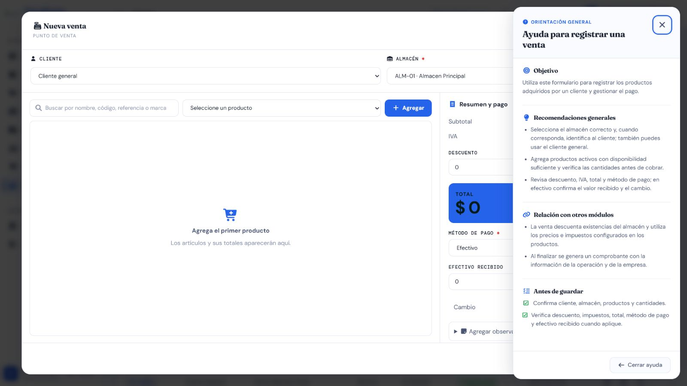

Casos de prueba — Ventas, anulaciones y comprobantes
Prefijo: TC-VTA · Cobertura mínima: 7 casos · Ejecución final: 6 aprobados, 1 fallido · Fecha: 8 de agosto de 2026
Alcance
Cubre registro, cálculos, métodos de pago, stock, responsable, listado, detalle, anulación y comprobante de Ventas. Crear, listar, ver detalle y anular admite Administrador, Supervisor y Vendedor. Las pruebas de stock y rollback deben ejecutarse también en PostgreSQL 15.18.
Matriz de casos
| ID | Nombre | Tipo | Funcionalidad que verifica | Precondiciones y rol | Datos ficticios | Resultado esperado | Automatización existente | Falta automatización | Evidencia | Prioridad |
|---|---|---|---|---|---|---|---|---|---|---|
| TC-VTA-001 | Registrar venta válida y descontar stock | Positivo / integración | Cliente opcional/general, almacén, detalles, número único, vendedor real y salida de stock | Producto con stock, almacén activo; Administrador, Supervisor o Vendedor | Dos productos y cantidades controladas | HTTP 201; totales calculados; stock reducido una vez; número único; vendedor autenticado | A — pruebas aprobadas en SQLite/PostgreSQL y flujo UI E2E ejecutado |
Falta E2E automatizado | AUTO + API + DB-R + MAN; registro | Crítica |
| TC-VTA-002 | Rechazar cantidades, precios y stock inválidos | Negativo | Cantidad cero/negativa, precio negativo, líneas duplicadas y sobreventa | Stock conocido; rol autorizado | Cantidad 0, -1, precio -1, duplicados cuya suma excede stock | HTTP 400 en español, sin traza; no persiste venta ni cambia stock | A — test_vender_mas_que_disponible, test_cantidad_cero, test_cantidad_negativa, test_precio_negativo, test_errores_en_espanol_no_exponen_trazas; duplicados también en Inventario |
Parcial: consolidar rollback y PostgreSQL | AUTO + API + DB-R | Crítica |
| TC-VTA-003 | Calcular subtotal, descuento, IVA y total | Integración | Cálculo en servidor y rechazo de descuento superior al subtotal o valores manipulados | Productos configurados; rol autorizado | Precios/IVA conocidos, descuento válido y descuento excesivo | Cálculos coinciden con reglas reales; descuento inválido se rechaza; totales enviados no prevalecen | P — el flujo válido comprueba totales básicos, pero no se localizaron pruebas frontera de descuento/IVA |
Sí: matriz de cálculos y redondeo | AUTO + API | Crítica |
| TC-VTA-004 | Validar métodos de pago | Positivo / negativo | Efectivo y cambio; débito, crédito, transferencia, Nequi, DaviPlata y otro con sus datos aplicables | Venta válida; rol autorizado | Efectivo exacto/insuficiente, últimos 4 dígitos, aprobación, comprobante u otro método ficticios | Cada método acepta solo datos válidos; efectivo insuficiente se rechaza; cambio se calcula en servidor | M — no se localizaron pruebas automatizadas específicas |
Sí: tabla por método y campos condicionales | AUTO + API + MAN; resumen y pago en formulario | Crítica |
| TC-VTA-005 | Rechazar entidades no operativas y hacer rollback | Integración / seguridad | Producto, cliente o almacén no apto; atomicidad cuando una línea falla | Entidades activas/inactivas controladas; rol autorizado | Segunda línea inválida o referencia inactiva | Falla toda la venta; no queda cabecera/detalle/movimiento parcial; stock intacto | M — no se localizó prueba automatizada directa |
Sí: estados y rollback transaccional | AUTO + API + DB-R | Crítica |
| TC-VTA-006 | Anular venta una sola vez y restaurar stock | Integración / permisos | Motivo, auditoría, idempotencia, restauración y rol | Venta completada; Administrador, Supervisor o Vendedor | Motivo ficticio y doble solicitud | Primera anulación restaura exactamente; repetición no duplica; estado, usuario y fecha quedan registrados | A/P — backend y API E2E ejecutados; stock restaurado |
Ampliar matriz automatizada de roles | AUTO + API + DB-R; anulada | Crítica |
| TC-VTA-007 | Listar, ver detalle y generar comprobante | Positivo / interfaz | Filtros, snapshot de empresa/cliente/productos, venta histórica y vista imprimible responsive | Ventas completada/anulada e histórica sin vendedor; sesión autorizada | Ventas ficticias en varios estados | Lista/detalle coherentes; histórico muestra “No disponible”; comprobante conserva datos de la operación y no expone información sensible | A/P — backend y comprobante UI E2E ejecutados |
Falta automatizar impresión/DOM | AUTO + API + MAN; comprobante | Alta |
{kind=link}
{kind=link}
{kind=link}
{kind=link}
Evidencia visual mínima
- VTA-formulario-pago-ayuda.png: venta nueva vacía con resumen, efectivo y ayuda contextual.
- Registro, detalle/comprobante y anulación, todos con datos ficticios aislados.

Los restantes métodos de pago se evidencian con una prueba parametrizada y respuestas API, no con capturas separadas.
Riesgos pendientes
- Falta cobertura automatizada de la matriz de pagos, descuento/IVA y rollback por referencias no operativas.
- La prueba del comprobante debe validar contenido histórico y presentación para impresión.
- Una venta nunca debe aceptar suplantación del vendedor ni dejar stock parcial ante error.
Resultado final de ejecución
| Total | Aprobados | Fallidos |
|---|---|---|
| 7 | 6 | 1 |
Registro, negativos, cálculos, rollback, anulación y comprobante aprobaron. TC-VTA-004 falló porque Débito se acepta sin datos condicionales (BUG-VTA-001); la Venta ficticia se anuló y el stock quedó restaurado. Ver resultados trazables.